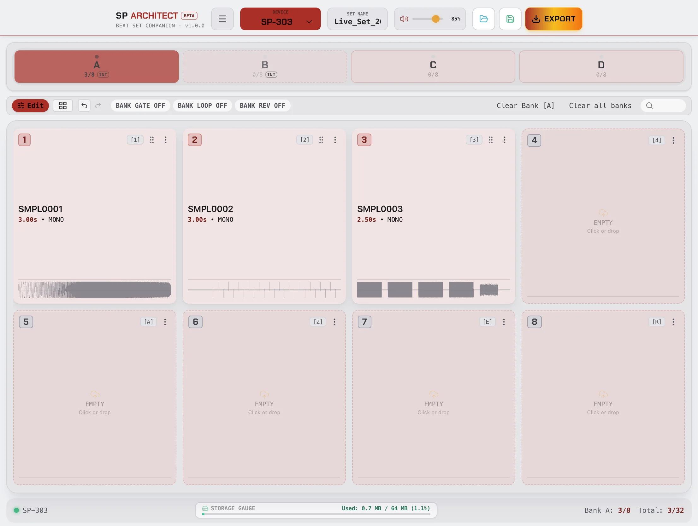
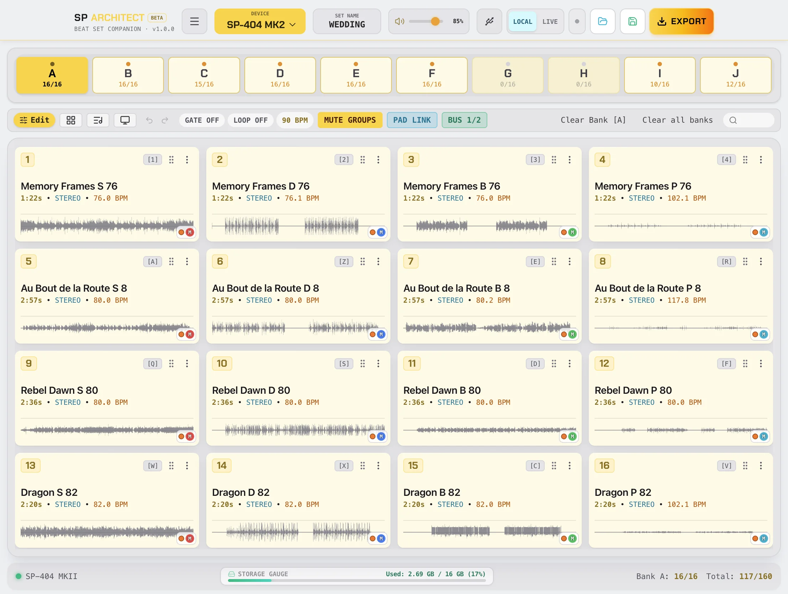
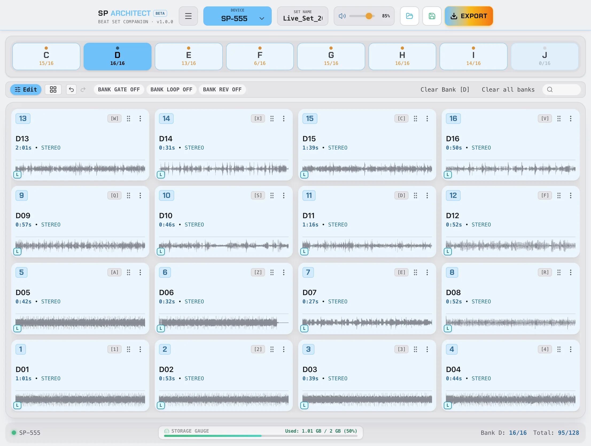
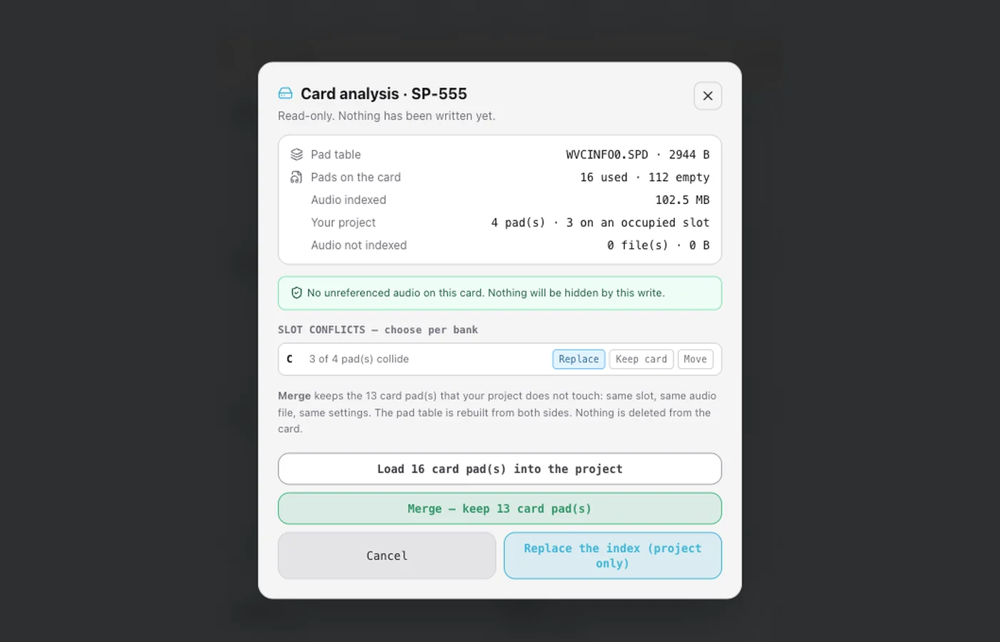
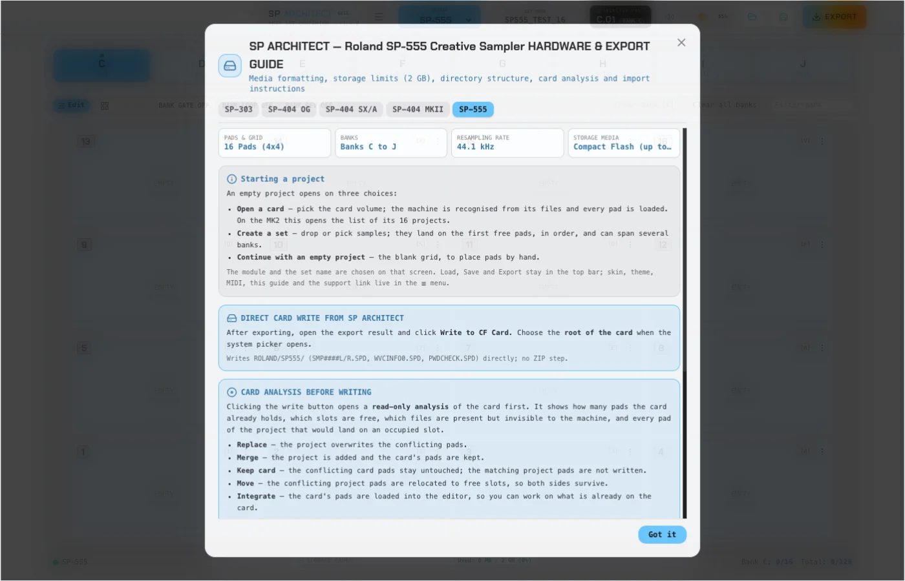
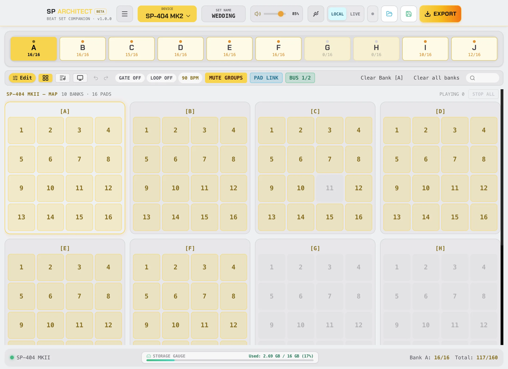

SP-303 · SP-404 OG · SP-404 SX/A · SP-404 MK2 · SP-555
Cinq SP. Une seule app.
SP Architect vous permet de préparer vos beat sets pour les cinq samplers iconiques de Roland (SP-303, SP-404 OG, SP-404 SX/A, SP-404 MK2 et SP-555). Partez d'un projet vide, ou ouvrez une carte que la machine a déjà écrite : l'application la comprend, récupère les samples et les réglages, et vous laisse tout réorganiser. Sur la SP-404 MK2, vous pouvez aussi brancher la machine en USB et travailler directement dans ses projets, sans passer par la carte. Ensuite, vous écrivez la carte, un ZIP ou un fichier projet — « une seule app pour les gouverner toutes », pour ces cinq-là en tout cas — et vous allez jouer.
Gratuit · aucune inscription · hors ligne.
LES MACHINES
Une carte par machine
Choisissez votre SP au démarrage : l'interface et les réglages s'adaptent. Les SP-202, SP-606 et SP-808 ne sont pas gérés.
SP-303
32 pads (8 par banque) sur SmartMedia. Carte réécrite en entier : pas de fusion ni de décalage.

Une carte d'origine, relue dans l'éditeur.
SP-404 OG
96 pads (12 sur 8 banques) sur CompactFlash. Les réglages GATE / LOOP / REVERSE de la carte sont conservés.

12 pads par banque, réglages par pad.
SP-404 SX / A
120 pads (12 sur 10 banques) sur SD, un fichier audio par pad. Les patterns ne sont pas encore gérés.

120 pads sur dix banques.
SP-404 MK2
160 pads (16 sur 10 banques) sur SD, avec le lien USB, les patterns et les écrans. Voir la section MK2.

Projet live : tempo par pad, bus, groupes.
SP-555
128 slots (16 sur 8 banques) sur CompactFlash ; les pads déjà présents sont récupérés.

Une vraie carte, 95 pads sur 128.
COMMENT ÇA MARCHE
Quatre étapes, toujours les mêmes
1 · Partir de zéro, ou d'une carte
Un set vide si vous voulez tout construire. Ou une carte (SD, CompactFlash, SmartMedia), ou un dossier déjà copié sur le disque : l'application reconnaît la machine, relit les samples et remet les pads dans l'ordre.
2 · Déposer, ranger
Glissez vos fichiers — plusieurs à la fois si vous voulez : ils se répartissent sur les pads libres, dans l'ordre. Ensuite, déplacez-les à la souris jusqu'à ce que le set vous plaise.
3 · Régler, écouter
Niveau, panoramique, pitch, boucle, filtre, enveloppe, tempo… tout est dans un panneau par pad. Pré-écoute au clavier, et la jauge de carte vous dit s'il reste de la place.
4 · Écrire
Sur la carte (prête à mettre dans la machine), en ZIP, ou en fichier projet. Rien n'est écrit avant que vous ne cliquiez, et chaque écriture affiche sa progression.

LES DÉTAILS QUI CHANGENT LE TRAVAIL
Pensé pour aller vite
Plusieurs fichiers d'un coup
Déposez 10, 20, 50 fichiers sur la grille : ils tombent sur les pads libres dans l'ordre, sans les placer un par un.
Un pad vers le bureau ou le DAW
Glissez un pad vers le Finder, le bureau, une piste d'Ableton ou tout autre DAW : vous récupérez le WAV. Pratique pour réutiliser un sample ou le retravailler ailleurs.
Tempo et tonalité détectés
Le BPM et la tonalité sont détectés à l'import et affichés sur chaque pad. MK2, SX/A, OG et 555 enregistrent ce tempo dans leur table de pads : il apparaît donc aussi sur la machine. La SP-303 n'a pas de champ tempo.
Jauge et garde-fous
La jauge dit ce qui reste sur la carte et prévient si le set dépasse sa capacité (la limite de 1 Go d'une CompactFlash de 404 OG, par exemple).
Clair ou sombre, FR / EN / ES
Deux thèmes, trois langues. L'interface suit la machine : chaque module a sa couleur.
Export
Un seul bouton pour sortir le set : un ZIP prêt à copier, l'envoi direct à la machine par USB (MK2), ou l'écriture sur la carte. Les patterns et les écrans de la cible sont conservés.
Votre carte reste lisible
Quand la carte contient déjà des pads, l'application montre les deux côtés avant de toucher au moindre octet : pads utilisés, slots libres, conflits, fichiers invisibles pour la machine.
- Remplacer, fusionner, garder la carte, décaler ou intégrer ;
- les fichiers que l'application ne reconnaît pas ne sont jamais supprimés ;
- chaque écriture affiche sa progression et se vérifie.

Analyse avant écriture, banque par banque.
Le guide est dans le menu
Pas de PDF à retrouver : le guide de chaque machine s'ouvre depuis le menu ☰, avec la capacité de carte, l'arborescence attendue, chaque réglage de pad et la procédure d'import côté machine.

Le guide de chaque machine, dans l'application.
Le pad en entier
Renommer, remplacer, déplacer un sample, couper, faire un fade, normaliser, trim : sans quitter la fenêtre du pad. Et l'interface s'adapte à la machine : la MK2 montre tous ses réglages, une SP-555 ou une SP-303 seulement les leurs.


